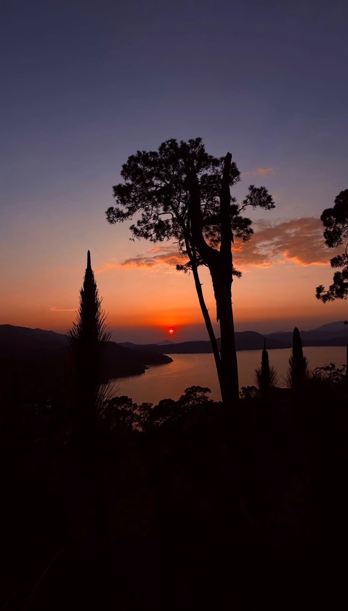
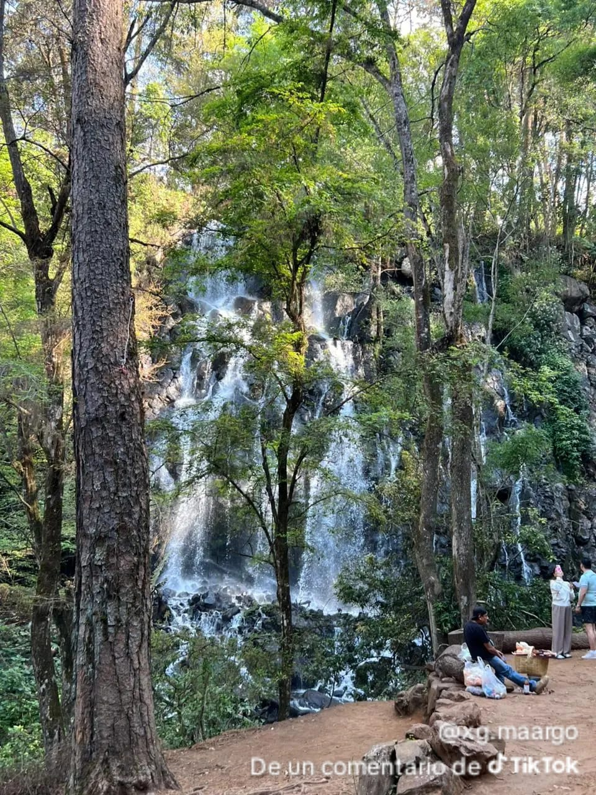
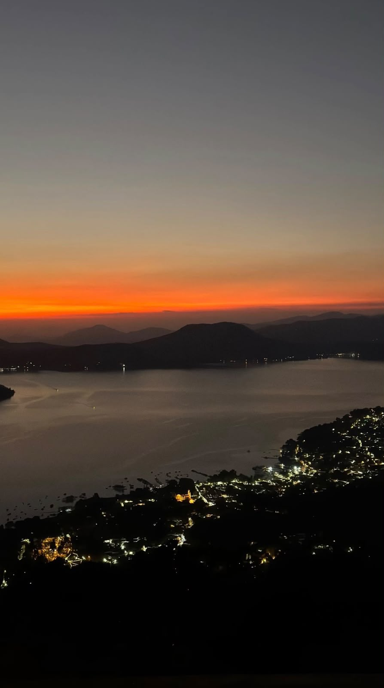

El corazon de Valle, es una presa artificial rodeada de bosques donde puedes hacer paseos en velero, lancha y kayak, el paseo ideal para ver el atardecer.
Es el único lago en México donde se puede practicar navegación de vela durante los 12 meses del año, aquí se han hecho campeonatos mundiales de vela, puedes alquilar desde un velero privado por $1,500 la hora, hasta un kayak por $150, una lancha de pedales o hacer esquí acuático.
El atardecer es a las 7:15 pm y es considerado uno de los 5 más bonitos de México porque el sol se esconde justo detrás del Cerro Gordo y pinta el agua de naranja y rosa.
Alrededor del malecón hay más de 30 restaurantes, desde tacos de trucha hasta comida italiana, dato curioso: el agua del lago no se usa para tomar, es para generar luz que aún alimenta al 3% de la CDMX.
Su origen se relaciona con la construcción de una presa artificial durante el siglo XX, el proyecto transformó el paisaje de la zona y permitió aprovechar el agua para la generación de energía eléctrica. Con el paso del tiempo, el embalse también adquirió importancia para el turismo y las actividades recreativas.
El lago genera oportunidades de empleo relacionadas con el turismo, los paseos en embarcaciones, los restaurantes y el hospedaje, además es uno de los lugares que más identifican a Valle de Bravo.
Es importante no arrojar basura al agua, evitar contaminar sus orillas y respetar las indicaciones de seguridad, mantener limpio el lago ayuda a proteger la naturaleza y conservar este atractivo para las futuras generaciones.

Una cascada de mas de 35 metros de altura escondida en el monte de Avandaro, rodeada de naturaleza, es perfecta para las fotos y para respirar aire puro.
Su nombre se debe a la forma en que cae el agua por las rocas, creando una imagen parecida al velo blanco de una novia, esta característica ha convertido a la cascada en un lugar muy popular para tomar fotografías.
La cascada se alimenta de corrientes de agua que descienden por las zonas montañosas, su caudal depende de las lluvias y de las condiciones ambientales, por lo que puede presentar una caída más abundante durante la temporada de lluvias.
A su alrededor crecen árboles, helechos, musgos y otras plantas que se desarrollan en ambientes húmedos, la vegetación ayuda a conservar la humedad del suelo y proporciona refugio a diferentes especies animales.
Los visitantes pueden caminar por los senderos, observar la caída del agua, descansar y tomar fotografías, es un lugar adecuado para convivir con la familia y disfrutar del paisaje natural, se aconseja usar calzado comodo, caminar con precaucion en los senderos humedos.
La cascada forma parte de un entorno forestal que contribuye a la conservación del agua, el suelo y la biodiversidad, proteger sus alrededores ayuda a mantener el equilibrio de los ecosistemas de Valle de Bravo.
Durante la temporada de lluvias, la cascada puede aumentar su caudal y producir un sonido más intenso, el paisaje verde y el sonido del agua hacen de este sitio un lugar especial para conocer la naturaleza de Avándaro, en los meses más secos, el caudal puede disminuir.

Es el mirador natural mas famoso, desde aqui se ve todo el lago y el pueblo, es hogar del parapente y de rutas para senderismo y bicicleta.
Una torre puede funcionar como estructura de observación, punto de comunicación o elemento arquitectónico, su forma, altura, materiales y función dependen de la construcción específica.
Los puntos elevados de la región permiten observar las montañas, la vegetación y, desde determinados lugares, el lago de Valle de Bravo. Estas vistas muestran la belleza natural que caracteriza al municipio.
Los lugares panorámicos pueden complementar los recorridos por el centro de Valle de Bravo, el malecón y las zonas boscosas, son atractivos para quienes disfrutan de la fotografía y de conocer nuevos sitios.
En las zonas boscosas cercanas pueden encontrarse árboles, arbustos y aves, por ello es importante evitar la contaminación y respetar la vegetación y los animales.
Los visitantes deben respetar las indicaciones, las zonas restringidas y las medidas de protección. No se debe subir a estructuras que no estén habilitadas para el acceso público.
Los puntos elevados permiten apreciar mejor el relieve de Valle de Bravo y la relación entre sus montañas, bosques y zonas habitadas, desde algunos miradores se pueden apreciar el lago, estas vistas permiten reconocer la riqueza natural de la región y comprender cómo se relacionan las zonas urbanas con el entorno forestal, la neblina que aparece en algunas temporadas crea un paisaje especial, ya que cubre parcialmente las montañas y los árboles, los miradores son puntos panoramicos.
